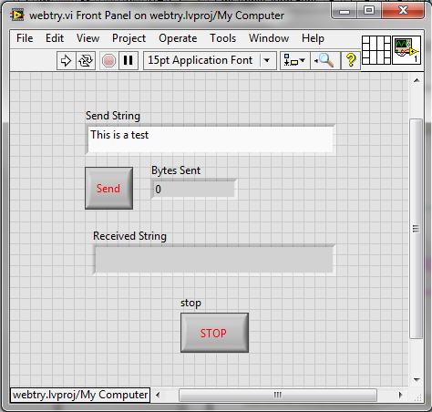

![LabVIEW block diagram of the finished TCP echo program, a flat sequence of four frames. Frame 1 waits 1000
ms, sets the stop local variable to False and opens a TCP connection to 192.168.1.73, remote port 10001, timeout
1000. Frame 2 holds a While loop around an Event structure with a 50 ms timeout, shown on its ”SendButton”:
Mouse Down case: the Send String control is concatenated between the constants \FD and \FF and sent with
TCP Write (timeout 100), Bytes Sent shows the bytes written, and TCP Read in CRLF mode (100 bytes,
timeout 6000) fills the Received String indicator. The SendButton icon sits inside this case and a False constant
goes to the loop’s stop terminal. Frame 3 waits 1000 ms (”Delay 0.5 Seconds before closing TCPIP Connection”)
and sets stop to False again, and frame 4 closes the TCP connection.](Labs/Figures/Lab2/Picture1.png)
SE 423 Mechatronics
Laboratory Assignment #2
(One Week Lab)
Introduction to Raspberry PI4 and
Introduction to TMS320F28379D GPIO Programming and Texas Instruments Code
Composer Studio
TA Check-Offs in this document: 10 (marked “TA Check-Off” in the text and listed at the end)
Below are three (signed) int16_t integers represented in binary format. What are these numbers in decimal format? Use the Windows Calculator and put it in Programmer Mode and select the WORD size (which is 16 bits).
|
LED1 |
GPIO22, Controlled with Registers GPADAT, GPASET, GPACLEAR and GPATOGGLE |
|
LED2 |
GPIO94, Controlled with Registers GPCDAT, GPCSET, GPCCLEAR and GPCTOGGLE |
|
LED3 |
GPIO95, Controlled with Registers GPCDAT, GPCSET, GPCCLEAR and GPCTOGGLE |
|
LED4 |
GPIO97, Controlled with Registers GPDDAT, GPDSET, GPDCLEAR and GPDTOGGLE |
|
LED5 |
GPIO111, Controlled with Registers GPDDAT, GPDSET, GPDCLEAR and GPDTOGGLE |
| PB1 |
GPIO157, Read bit status with Register GPEDAT |
| PB2 |
GPIO158, Read bit status with Register GPEDAT |
| PB3 |
GPIO159, Read bit status with Register GPEDAT |
| PB4 |
GPIO160, Read bit status with Register GPFDAT |
GPIO Register Use when GPIO pin set as Output: The GPIO Registers are 32 bit registers but we use unions
and bitfields in the C/C++ programming language to control just one bit of the 32 bit register at a time. The “.all” part
of the C/C++ union is the entire 32bit register. The “.bit.GPIO11” is just one bit in the 32 bit register. So these two
lines of C code perform the same operation:
//You have to think a little with this code to know that bit 11 is //being set. GpioDataRegs.GPASET.all = 0x00000800; //This line of code is somewhat easier to understand that we are //setting the 11th bit. GpioDataRegs.GPASET.bit.GPIO11 = 1;
| Register |
Usage |
Example |
|
GP?DAT |
GP?DAT.bit.GPIO? = 1, Sets that
Pin High, 3.3V |
|
|
GP?SET | GP?SET.bit.GPIO? = 1, Sets that
Pin High, 3.3V | GpioDataRegs.GPBSET.bit.GPIO37 = 1; Sets
GPIO37 High/3.3V |
|
GP?CLEAR |
GP?CLEAR.bit.GPIO? = 1, Sets
that Pin Low, 0V/GND |
GpioDataRegs.GPCCLEAR.bit.GPIO70 = 1; Sets
GPIO70 Low/0V |
|
GP?TOGGLE |
GP?TOGGLE.bit.GPIO? = 1, Sets
Pin opposite of its current state. |
GpioDataRegs.GPDTOGGLE.bit.GPIO98 = 1; was
3.3V then 0V or was 0V then 3.3V |
GPIO Register Use When GPIO Pin Set as Input: Each GPIO pin, when setup as an input, has an internal pull-up resistor that can either enabled/connected or disabled/disconnected to that GPIO pin. With the passive push button on our breakout board, we will need to enable the pull-up resistor.
| Register |
Usage |
Example |
|
GP?DAT |
If GP?DAT.bit.GPIO? is equal
to 1 then the Pin is High, 3.3V |
|
First, to give you practice performing these steps if needed in the future, check if the class repo has any changes or additional files to merge into your repo already on the lab PC. Under Lab 1, find the Git help file titled “Using the SE423 Repository” and read and perform the steps of the section of the document titled “Course File Updates.” These steps will pull the latest updates from the class repository. Ask your TA for help if needed. There probably will not be any updates but in the future if your instructor makes some additions you will need to perform these steps again.
In this exercise 1 you will create a simple LABVIEW VI from scratch to communicate with your robot. Use the below steps along with the picture of the block diagram below to create this LabVIEW application.
workspace\LabView”. Create a folder “Lab2”
here. In “workspace\LabView” is where I recommend you save all your LabView files. This way when you
add your CCS projects to Github by running “git add workspace” you will also be adding your LabView files.
workspace\LabView\Lab2” folder.
\FD” and the second
“\FF”.
f33dback5”,
and then you have a wireless terminal of your RPI4’s Linux operating system. Type ls (list) and see all the
folders of the user pi’s home directory. The program we want to run is called LVecho and it is located in the
folder lvecho. Change directory into the lvecho folder by typing “cd lvecho” (cd is change directory). Run
the Linux application LVecho by typing “./LVecho”. The “./” tells Linux to look in the current directory
for the application to execute. This application will be used to verify your LABVIEW GUI is working. It
simply receives the messages you send from LABVIEW, prints them to the Linux console and echoes them
back to your LABVIEW application.
Run your LABVIEW application, and type a message into your Send String control. Click on the Send button and your message should print at the Linux console and echo back to the Received String indicator.
Demonstrate your LabVIEW programming talking back and forth to your robot’s Raspberry Pi board.

In this exercise we are back to working with Code Composer Studio and the F28379D Laundpad board (red board) on the
robot car. Import “LABstarter”, instructions in Lab 1 or your HowTo document, to create a new project in
your workspace and call it lab2<yourinitials>. Once you have your new lab2 project perform the below
steps.
For this lab, you will only be using CPU Timer 2’s interrupt service routine “cpu_timer2_isr(void)”. We will leave the timer0 and timer1 functions in our source code but we will not enable timer0 or timer1. So in main() find the two lines of code that set the TIE (Timer Interrupt Enable) bit to enable timer 0 and timer 1. Comment these two lines so they are not included in your program. i.e.
//CpuTimer0Regs.TCR.all = 0x4000; //CpuTimer1Regs.TCR.all = 0x4000;
In main() find the “ConfigCpuTimer” function call for CPU Timer 2 and set its period to 0.25 seconds. Also find CPU Timer 2’s interrupt function “cpu_timer2_isr.” Note that in this function, it is blinking the blue LED on the Launchpad on and off. Build and Debug this code to make sure that the code compiles and runs. You should see the blue LED blinking on and off every half second. Once that is working, terminate your debug session so you are back in Edit mode. Before going to the next step, let’s take a few minutes to think about the period value that you passed to the “ConfgiCpuTimer” function. 0.25 seconds is a large number of microseconds so you may have thought about what the largest acceptable number is to pass to this period parameter. To find this largest period setting we need to look at the TIM (timer register) and PRD (period register) registers of the CPU Timers. Both the PRD and TIM registers are 32 bits long and they each store a 32 bit unsigned integer. The TIM register starts at the value set in the PRD register and counts down by 1 every 1/200000000 seconds (200Mhz). (Note here that we are not use the pre-scaler of the CPU timer.) Whenever the TIM register counts down to 0 an interrupt event is issued calling the CpuTimer2 interrupt service routine. At this moment, the TIM register is also set back to the value set in the PRD register to start timing again.
Knowing that a 32 bit unsigned integer has a maximum value, what is the largest period in seconds that the CPU Timers can be set to? Explain your answer to your TA.
Take a look at the global uint32_t variable numTimer2calls. Inside the cpu_timer2_isr(void) function, this variable increments by one each time that function is entered. In addition, every 10th time the function is entered, the global variable UARTPrint is set to 1. Change the code so that UARTPrint is set to 1 each time the cpu_timer2_isr function is entered. You can do this by changing the modulus to 1 or better just remove the if statement. Setting UARTPrint to 1, tells the main() while loop to print text through a UART serial port to the robot’s text LCD dispaly. Find the UART_printfLine(1, ...) function call in the main() while loop.
Does it make sense that when you set UARTPrint to 1, the while loop will call the UART_printfLine (1, ...) function? Why is UARTPrint set to zero inside the if statement after UART_printfLine (1, ...) is called? Explain to your TA.
Notice that the print statement prints the numTimer2calls global variable. Since numTimer2calls is a 32-bit integer the %ld formatter is used. Change the “line 2” UART_printfLine(2, ...) call so that both 4*numTimer2calls and 6*numTimer2calls is printed with a comma between the two numbers. Look at the line 2 call of UART_printfLine to see how to use two formatters to print two items.
Debug and run your code and check that the LaunchPad’s blue LED is still blinking and your text is printing to the LCD. Show your TA.
Write two worker functions “void SetLEDsOnOff(int16_t LEDvalue)” and “int16_t ReadSwitches(void)”.
void SetLEDsOnOff(int16_t LEDvalue) takes a 16 bit integer as a parameter. The five least significant bits of this integer determine if the five LEDs are on or off. Bit 0 determines LED1’s state. Bit 1 determines LED2’s state. Bit 2 determines LED3’s state. Bit 3 determines LED4’s state. Bit 4 determines LED5’s state. So for example if 18 (0x12, which is binary 10010) is passed to your function then LED5 and LED2 should be ON. Use five if statements inside your function to check, using the bitwise AND, &, operator, if the integer passed to your function has the least significant five bits either individually set or cleared. If set, turn ON the corresponding LED. If cleared, turn OFF the corresponding LED. See the above tables for LED GPIO assignments. I want you using the GP?SET and GP?CLEAR registers to turn on or off the LEDs. To test this function call it each time in your CPUTimer2 interrupt function and pass to it your global variable numTimer2calls. numTimer2calls is getting incremented by one each timer interrupt so you should see the five LEDs counting in binary.
What happens if the number passed to SetLEDsOnOff() is greater than 31? Also what happens when you pass a 32 bit integer to a function that is asking for a 16 bit integer like your SetLEDsOnOff function? Demo and explain to your TA before writing your ReadSwitches() function below.
Now that you have these worker functions, make your program a bit more interesting. Add code in your CPU timer 2 interrupt function so that you display to the LEDs the value returned from your ReadSwitches() function. Do this by creating a global int16_t variable and assign it the value returned from ReadSwitches(). Pass this global variable to your SetLEDsOnOff(value) function to see its binary value displayed on the LEDs. Also print this global variable by adding text (or shortening the text so it fits on the LCD) to one of the UART_printfLine function calls in main()’s while loop. Make sure to use the %d formatter because this is an int16_t variable.
Show this working to your TA.
Add one more item to this code as an exercise to see the use of bitwise operators in C. Calling the ReadSwitches() function, use an “if” statement and the bitwise C operator & to check if push buttons 2 and 3 are pressed. If both of these push buttons are pressed, stop incrementing the “countsWhenNotPressed” variable. If one or both of the pushbuttons are released, continue counting. Again, compile and download to the microcontroller.
When your code is working, demonstrate your application to your TA.
Starting with the code you just finished, we want to experiment with adding breakpoints to your code and using the “Expressions window” to edit the values of your variables.
Next play a bit with adding breakpoints and single stepping through a section of code. The code you have written to this point is very small. Add the following nonsense code to allow for easy use of breakpoints and code stepping. At the top of your C-file, but below the #includes, add the following global variables:
float x1= 6.0; float x2= 2.3; float x3= 7.3; float x4= 7.1;
Then inside your CPU timer 2 interrupt function add this nonsense code:
x4 = x3 + 2.0; x3 = x4 + 1.3; x1 = 9*x2; x2 = 34*x3;
Build and load your code. Add a breakpoint to your code by double clicking on the left gray margin of your source file. A breakpoint is a location where the program will literally halt during execution. This allows you to check the values of your variables during operation. After a breakpoint, you can single step through your code (F5) and watch the variables update as different calculations are performed. You remove breakpoints by again clicking in the left gray margin.
If you happened not to receive any compiler errors during any of the above exercises, you should intentionally add some errors to your code so that you will see how CCS will alert you during the build process. Try double clicking on the error message. The editor will then take you to the line of code that has the error.
Demonstrate that you know how to use Breakpoints and the Watch Window to debug your source code.
For many of our lab assignments we will want to have at least one of our timers running at a fast periodic rate. Most of the time that will be somewhere between a period of 1ms to 5ms. I would not be surprised though, if some of your projects will require you to run code at an even faster rates and the F28379D can definitely handle periodic rate of 0.1ms to 0.02ms. For this exercise, use a period of 1ms. which can also be stated as a sample frequency of 1Khz. Change CPU Timer 2’s period to 1ms in order that CPU Timer 2’s interrupt function is call once every millisecond.
The F28379D can perform a large number of instructions every 1ms, but there are some things you do not want the processor performing every 1ms. For example the printing to the robot’s text LCD, if we printed every 1ms our eyes would not be able to see all the text spilling to the screen. Also calling the SetLEDsOnOff() function every 1ms would cause a blur if LED changes. Add code to your CPU Timer 2 interrupt function to only print every 100th time the function is called. The % (mod) operator is perfect for this. Mod returns the remainder of an integer divided by another integer. i.e. (56 % 5) = 1. Using “numTimer2calls” that you are incrementing every time in the timer interrupt, write an if statement with a % (mod) condition that causes the if statement to be true every 100th time in the timer interrupt. Inside this if statement, perform all code that makes sense to run at the slower rate.
Demo this to your TA.
Now that you are done with the lab power off your Raspberry Pi by going back to the Putty terminal that is
connected to your PI and typing “sudo shutdown now”. This will shutdown the Pi and it takes about 5 seconds or so to
shutdown.
Tick each box once your TA or instructor has checked you off.
Make sure that you comment you code and put your initials in your Gradescope submission! See https://marius-juston.github.io/SE-423---Class-Material/Homeworks/commenting_code_example.pdf for how we expect the code to be commented like!